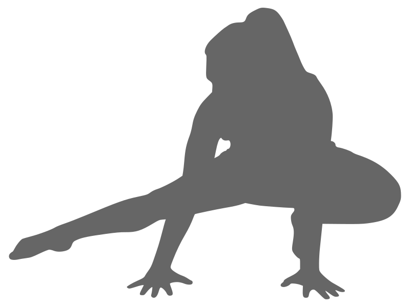

Locomotion
Crawl like an animal to build strength, mobility, and motor control.
Crawl your way to physical autonomy.

FAQ
What is Locomotion?
Technically, locomotion is the act of moving from one location to another. To me, it is basically crawling like an animal. This practice allows you to reclaim natural movement by developing strength, mobility, and motor control that translate directly into your everyday life.
What is physical autonomy?
Physical autonomy is the ability to do all the things that are important to you. It might be picking something up off the floor without wincing or playing a neighborhood game of soccer and not feeling broken the next day. No matter what your goals are, locomotion can help you progress toward them.
What is motor control?
Motor control is the ability to get your body to do what your brain is telling it to do. It is like being able to pat your head and rub your tummy at the same time. Practicing locomotion develops this skill, increasing the efficiency and ease of all your movements.
How does locomotion do it all?
GMB locomotion uses four basic movements: Bear, Monkey, Frogger, and Crab. There are endless variations of these exercises and ways to link them together. Each movement simultaneously engages the upper body, core, and lower body in unique ways.
Locomotion in Small Spaces
You don’t need much space to move. I love designing locomotion flows for tight spots. Here is one of my original small space routines. Find more of my work on my YouTube channel.